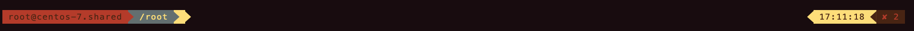

目录
安装
安装zsh
oh-my-zsh是zsh的一个框架，所以安装oh-my-zsh前需要安装zsh。
For Mac
1
brew install zsh
For CentOS
1
yum install zsh
For Ubuntu
1
apt install zsh
安装git
在执行oh-my-sh安装脚本的时候会用到git命令所以要提前安装好。
For CentOS
1
yum install git
For Ubuntu
1
apt install git
安装oh-my-zsh
via curl
1
sh -c "$(curl -fsSL https://raw.githubusercontent.com/ohmyzsh/ohmyzsh/master/tools/install.sh)"
via wget
1
sh -c "$(wget -O- https://raw.githubusercontent.com/ohmyzsh/ohmyzsh/master/tools/install.sh)"
{kind=link}
配置
插件
zsh-syntax-highlighting
zsh-syntax-highlighting为zsh提供语法高亮。
安装
1 | git clone https://github.com/zsh-users/zsh-syntax-highlighting.git ${ZSH_CUSTOM:-~/.oh-my-zsh/custom}/plugins/zsh-syntax-highlighting |
.zshrc中
1 | plugins=( [plugins...] zsh-syntax-highlighting) |
激活插件
1 | source .zshrc |
zsh-autosuggestions
zsh-autosuggestions是zsh下的自动补全插件。
安装
1 | git clone https://github.com/zsh-users/zsh-autosuggestions ${ZSH_CUSTOM:-~/.oh-my-zsh/custom}/plugins/zsh-autosuggestions |
.zshrc中
1 | plugins=( [plugins...] zsh-autosuggestions) |
激活插件
1 | source .zshrc |
themes
oh-my-zsh可以使用theme命令更换主题。
安装，.zshrc中。
1 | plugins=( [plugins...] themes) |
1 | theme [theme_name] # 更换主题 |
其他
更多插件。
主题
powerline
安装powerline字体
1 | git clone https://github.com/powerline/fonts.git --depth=1 |
安装
1 | git clone https://github.com/jeremyFreeAgent/oh-my-zsh-powerline-theme.git |
.zshrc中
1 | ZSH_THEME="powerline" |
配置，在.zshrc中。
powerline默认在右边展示日期和时间，可以选择展示项。
{kind=link}
自定义显示项
1 | POWERLINE_RIGHT_B="❤❤❤❤" |
{kind=link}
关闭右边的展示项
1 | POWERLINE_RIGHT_B="none" |
{kind=link}
显示日期
1 | POWERLINE_RIGHT_A="date" |
{kind=link}
自定义
1 | POWERLINE_RIGHT_A="Hello world" |
{kind=link}
显示上一条命令的执行状态
1 | POWERLINE_RIGHT_A="exit-status" |
{kind=link}
执行异常
{kind=link}
只显示执行异常的命令的状态
1 | POWERLINE_RIGHT_A="exit-status-on-fail" |
混合，既可以显示日期和时间，也会显示执行异常的命令的状态。
1 | POWERLINE_RIGHT_A="mixed" |
修改POWERLINE_RIGHT_A的颜色。
1 | POWERLINE_RIGHT_A="date" |
{kind=link}
修改日期的格式
1 | POWERLINE_RIGHT_A="date" |
{kind=link}
隐藏用户名
1 | POWERLINE_HIDE_USER_NAME="true" |
{kind=link}
隐藏主机名
1 | POWERLINE_HIDE_HOST_NAME="true" |
{kind=link}
短主机名
1 | POWERLINE_SHORT_HOST_NAME="true" |
{kind=link}